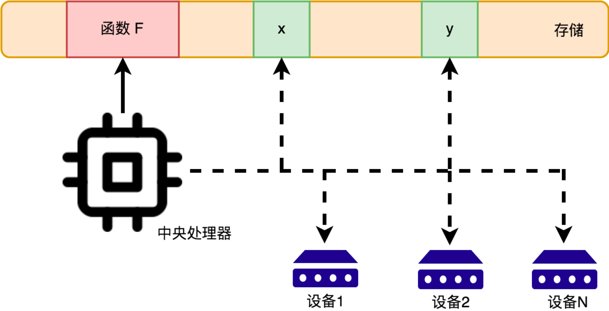
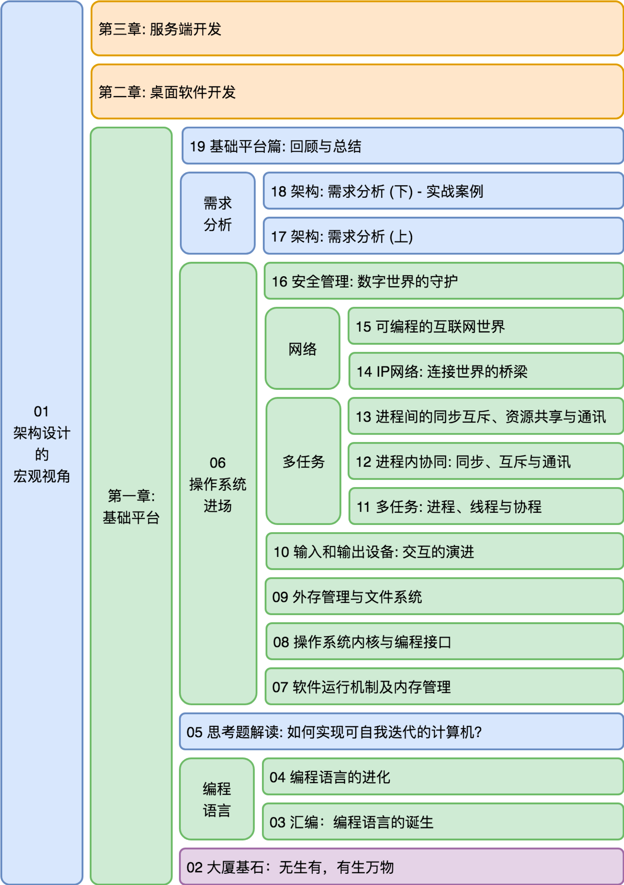
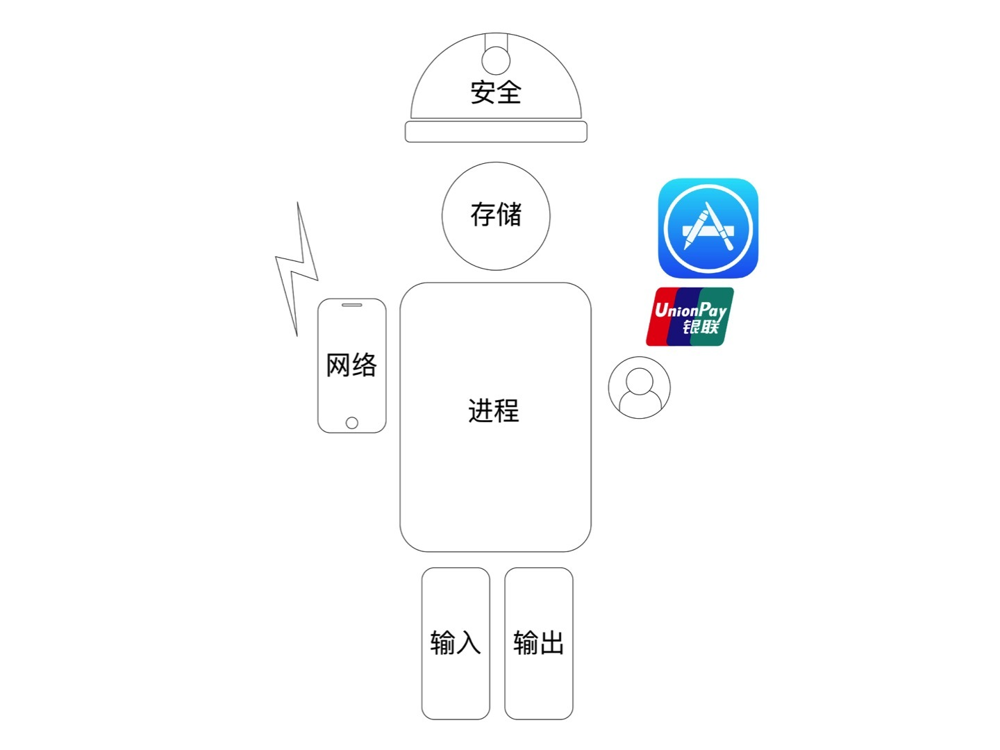
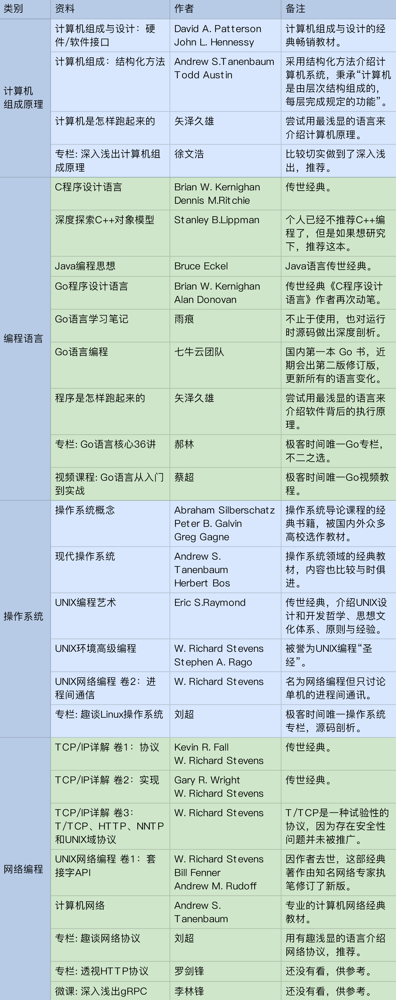

- 00 开篇词 怎样成长为优秀的软件架构师？.md.html
- 01 架构设计的宏观视角.md.html
- 02 大厦基石：无生有，有生万物.md.html
- 03 汇编：编程语言的诞生.md.html
- 04 编程语言的进化.md.html
- 05 思考题解读：如何实现可自我迭代的计算机？.md.html
- 06 操作系统进场.md.html
- 07 软件运行机制及内存管理.md.html
- 08 操作系统内核与编程接口.md.html
- 09 外存管理与文件系统.md.html
- 10 输入和输出设备：交互的演进.md.html
- 11 多任务：进程、线程与协程.md.html
- 12 进程内协同：同步、互斥与通讯.md.html
- 13 进程间的同步互斥、资源共享与通讯.md.html
- 14 IP 网络：连接世界的桥梁.md.html
- 15 可编程的互联网世界.md.html
- 16 安全管理：数字世界的守护.md.html
- 17 架构：需求分析 (上).md.html
- 18 架构：需求分析 (下) · 实战案例.md.html
- 19 基础平台篇：回顾与总结.md.html
- 20 桌面开发的宏观视角.md.html
- 21 图形界面程序的框架.md.html
- 22 桌面程序的架构建议.md.html
- 23 Web开发：浏览器、小程序与PWA.md.html
- 24 跨平台与 Web 开发的建议.md.html
- 25 桌面开发的未来.md.html
- 26 实战（一）：怎么设计一个“画图”程序？.md.html
- 27 实战（二）：怎么设计一个“画图”程序？.md.html
- 28 实战（三）：怎么设计一个“画图”程序？.md.html
- 29 实战（四）：怎么设计一个“画图”程序？.md.html
- 30 实战（五）：怎么设计一个“画图”程序？.md.html
- 31 辅助界面元素的架构设计.md.html
- 32 架构：系统的概要设计.md.html
- 33 桌面开发篇：回顾与总结.md.html
- 34 服务端开发的宏观视角.md.html
- 35 流量调度与负载均衡.md.html
- 36 业务状态与存储中间件.md.html
- 37 键值存储与数据库.md.html
- 38 文件系统与对象存储.md.html
- 39 存储与缓存.md.html
- 40 服务端的业务架构建议.md.html
- 41 实战（一）：“画图”程序后端实战.md.html
- 42 实战（二）：“画图”程序后端实战.md.html
- 43 实战（三）：“画图”程序后端实战.md.html
- 44 实战（四）：“画图”程序后端实战.md.html
- 45 架构：怎么做详细设计？.md.html
- 46 服务端开发篇：回顾与总结.md.html
- 47 服务治理的宏观视角.md.html
- 48 事务与工程：什么是工程师思维？.md.html
- 49 发布、升级与版本管理.md.html
- 50 日志、监控与报警.md.html
- 51 故障域与故障预案.md.html
- 52 故障排查与根因分析.md.html
- 53 过载保护与容量规划.md.html
- 54 业务的可支持性与持续运营.md.html
- 55 云计算、容器革命与服务端的未来.md.html
- 56 服务治理篇：回顾与总结.md.html
- 57 心性：架构师的修炼之道.md.html
- 58 如何判断架构设计的优劣？.md.html
- 59 少谈点框架，多谈点业务.md.html
- 60 架构分解：边界，不断重新审视边界.md.html
- 61 全局性功能的架构设计.md.html
- 62 重新认识开闭原则 (OCP).md.html
- 63 接口设计的准则.md.html
- 64 不断完善的架构范式.md.html
- 65 架构范式：文本处理.md.html
- 66 架构老化与重构.md.html
- 67 架构思维篇：回顾与总结.md.html
- 68 软件工程的宏观视角.md.html
- 69 团队的共识管理.md.html
- 70 怎么写设计文档？.md.html
- 71 如何阅读别人的代码？.md.html
- 72 发布单元与版本管理.md.html
- 73 软件质量管理：单元测试、持续构建与发布.md.html
- 74 开源、云服务与外包管理.md.html
- 75 软件版本迭代的规划.md.html
- 76 软件工程的未来.md.html
- 77 软件工程篇：回顾与总结.md.html
- 加餐 如何做HTTP服务的测试？.md.html
- 加餐 实战：“画图程序” 的整体架构.md.html
- 加餐 怎么保障发布的效率与质量？.md.html
- 热点观察 我看Facebook发币（上）：区块链、比特币与Libra币.md.html
- 热点观察 我看Facebook发币（下）：深入浅出理解 Libra 币.md.html
- 用户故事 站在更高的视角看架构.md.html
- 答疑解惑 想当架构师，我需要成为“全才”吗？.md.html
- 结束语 放下技术人的身段，用极限思维提升架构能力.md.html
- 课外阅读 从《孙子兵法》看底层的自然法则.md.html
- 捐赠
19 基础平台篇：回顾与总结
你好，我是七牛云许式伟。
到今天为止，我们第一章 “基础平台篇” 就要结束了。今天，让我们对整章的内容做一个回顾与总结。
抽象信息世界的骨架
基础平台篇主要涉及的内容如下。
这些内容如果展开来讲，每一系统（或模块）都会是很厚的一本书。我们的目的，当然不是为了取代这里每一个领域知识相关的专业书籍。
我们的核心目标是以架构为导向，抽象出系统的骨架，融会贯通，把这些领域知识串起来，拼出完整的信息世界的版图。
抽象出系统骨架的过程时信息必然是有损的，怎么才能做到忽略掉众多的实现细节，把系统以简洁易于理解的方式呈现出来？
这很大程度取决于你对系统的理解程度和抽象能力。如果我们把系统想象成一个人，大部分情况下我们比较容易对其进行详尽而具体的描述，好比下图。
这相对容易。因为你只需要陈述你看到的事实，而不必拷问背后的原因。但实际上为了在最短的时间里让别人理解你的想法，你也许应该这样来描述它，见下图。
当你不是在描述这个系统本身，而是描述它与其他系统的相互关系时，你可能需要进一步简化它，变成如下图这样。
抽象有助于记忆，因为骨架需要逻辑的自洽。
这种抽象能力之所以重要，是因为它是融会贯通、疏通整个信息世界的知识脉络的关键。当你做到对世界的认知可宏观、可微观，自然一切皆在掌握。
比如，本章我们首先介绍的是冯·诺依曼体系结构，我们把它抽象为“中央处理器（CPU）+ 存储 + 一系列的输入输出设备”，并给出了系统的示意图如下。

这个图相当笼统，并没有涉及中央处理器（CPU）指令设计的真正细节。比如，我们没有介绍栈（stack）这个概念，虽然它实际上也非常关键。
为什么需要引入栈？它在中央处理器中起到了什么样的作用？
要了解这个问题，你就需要深入到中央处理器的架构设计中去。如果你对梳理中央处理器的架构设计感兴趣，可以尝试写一篇介绍它的文字。
做这样的事情会对你非常的锻炼。** “你自己理解一个事物”和“把你的理解表述成文，去引导其他人也能够理解它”**，是完全不同难度的事情。
如果你对中央处理器的设计细节感兴趣，可以进一步查阅相关的参考资料。也欢迎与我分享你的心得体会。
基础平台篇的内容回顾
这一章前面我们讲了些什么？为了让大家对第一章内容有个宏观的了解，我画了一幅图，如下。

首先，我们介绍了冯·诺依曼体系结构。 从需求演进角度看，虽然我们信息科技发展日新月异，但是底层设计并没有发生过变化，非常稳定。从这一点来说，我们不能不佩服他们的远见。
随后，我们介绍了编程语言的演进。 从汇编语言的诞生，出现了程序员这个新职业开始，此后编程语言的演进便进入高速发展期。
然而，尽管语言很多，但是编程范式的演进却并不剧烈。大家熟知的过程式、函数式、面向对象基本上能够把几乎所有的语言都囊括其中。Go 语言独树一帜地宣称自己是面向连接的语言，我们着重对比了面向对象与面向连接思想上的差异。
编程语言本身与业务架构的设计关联性不大，虽然模块规格的描述会借助语言的文法。** 但是语言长期演进所沉淀下来的社区资源，是我们架构设计所依赖的重要基础。** 充分利用好这些资源可以大大降低系统的研发成本。
最后，我们开始聊操作系统。 从 UNIX => DOS => Windows/Mac/Linux => iOS/Android，从用户交互、进程管理、安全管理等角度看，操作系统的需求演变非常剧烈。
传统操作系统主要包含五个子系统：设备管理（包括存储设备、输入/输出设备、网络设备）、进程管理和安全管理。
输入/输出设备主要和交互有关，我们概要描述，基本上一笔带过。我会在后面 “桌面软件开发” 这一章再详加讨论。而服务端的交互比较简单，命令行基本上就满足需求，所以 “服务端开发” 一章我们不会再特意去展开。
另外，操作系统的商业模式也发生了剧烈的变化。
早期操作系统的营收模式以软件销售收入为主。但是从苹果的 iOS 开始，操作系统都无一例外地增加了以下三个模块：
- 账号（Account）；
- 支付（Pay）；
- 应用市场（AppStore）。

注意，这里我们说的账号是指互联网账号。传统操作系统虽然也有账号概念，但是，它是本地账号，属于多用户权限隔离所需。
而互联网账号的价值完全不同，它是支付和应用商店的基础。没有账号，就没有支付系统，也没有办法判断用户是否在应用市场上购买过软件。
实现了“帐号-支付-应用市场”这样的商业闭环，意味着操作系统的商业模式，从软件销售转向了收税模式。这类操作系统，我们称之为现代操作系统。所有现代操作系统，所凭借的都是自己拥有巨大的流量红利。
基础平台篇的参考资料
概要回顾了我们 “基础平台篇” 的内容后，我们这里补充一下有助于理解我们内容的相关资料，如下。

有了本专栏梳理的骨架，相信对你学习和理解以上这些材料会一定的指引意义。
如果你有什么推荐的优秀参考资料，也欢迎在留言区分享，我补充到这个表格中来，我们一起来完善它。
架构之美在于悟
信息世界是无中生有创造出来的，我们不需要去记忆，而是要找到创造背后的骨架和逻辑。
架构即创造。
学架构在于匠心和悟心。它靠的是悟，不是记忆。** 用思考的方式去记忆，而不是用记忆的方式去思考。**
我们日常所依赖的基础平台，随处可见的架构之美，看到了，悟到了，就学到了。 如果你只能从你自己写业务代码中感受架构之道，那么你可能就要多留些心思了。
比如，如果你日常用的是 Go 语言，那么你可以做一个作业：“谈谈 Go 语言之美”。你从Go语言的设计中感悟到了什么样的架构思维？当然如果你不常接触 Go 语言，可以给自己换一个题目，比如 “Java 语言之美”。
作为架构师，如何构建需求分析能力，尤其是需求的预判能力？
首先，归纳总结能力很重要。 分析现象背后的原因，并对未来可能性进行推测。判断错了并不要紧，分析一下你的推测哪些地方漏判了，哪些重要信息没有考虑到。
另外，批判精神也同样至关重要。 批判不是无中生有的批评，而是切实找到技术中存在的效率瓶颈和心智负担。尤其在你看经典书籍的时候，要善于找出现状与书的历史背景差异，总结技术演进的螺旋上升之路，培养科学的批判方法论。
结语
今天我们对本章内容做了概要的回顾，并借此对整个基础平台的骨架进行了一次梳理。
我们最为依赖，也最为强调的，是抽象能力。它对于构建信息世界的骨架至关重要。为此我们需要不断改造自己的抽象体系。例如，前面 “[02 | 大厦基石：无生有，有生万物]” 这一讲中提到过：
引入了输入输出设备的电脑，不再只能做狭义上的“计算”（也就是数学意义上的计算），如果我们把交互能力也看做一种计算能力的话，电脑理论上能够解决的“计算”问题变得无所不包。
有同学留言问：输入/输出设备提供的明明是一种 IO 能力，怎么能够算得上是“计算”？
但是实际上，我们人类其实就是在这种“否定自己，不断延展自己的抽象体系”，补全自己的想象力。我们以数学中最为基础的 “数” 为例子。数的演化大概经历了：
自然数 => 整数 => 有理数 => 实数 => 复数
输入/输出能力算不算是“计算”？我们不妨以广义的“计算”角度来看。
输入（Input），无非是采集物理世界的信息，将其数字化，所以一个输入设备其实可以看作是一个模数转换的“算子”。只不过这个算子非 CPU 的指令可以表达。
输出（Output），无非是将数字内容反作用于物理世界，一个输出设备其实可以看作是一个数模转换的“算子”。同样，这个算子非 CPU 的指令可以表达。
计算机 CPU 自身只能做数数转换，输入是比特信息，输出还是比特信息。结合了输入/输出设备提供的数模和模数转换的 “算子”，连接了数字世界和物理世界的计算机，在数学上也就完备了。
如果你对今天的内容有什么思考与解读，欢迎给我留言，我们一起讨论。本章到此结束，我们将开始第二章：桌面开发的宏观视角。
如果你觉得有所收获，也欢迎把文章分享给你的朋友。感谢你的收听，我们下期再见。
© 2019 - 2023 Liangliang Lee. Powered by gin and hexo-theme-book.